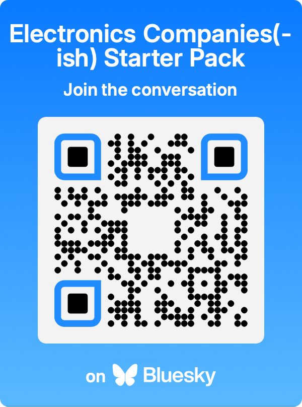
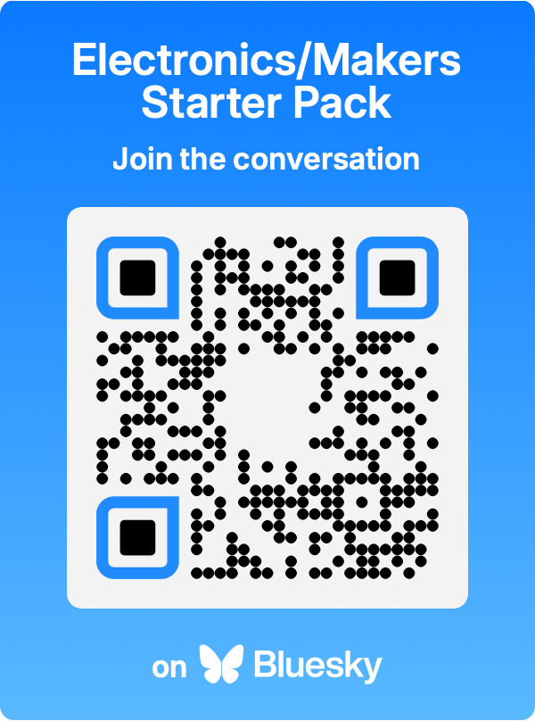

Contents
Not another social network!
Despite a few warts we - or I (Hi, it's Phil writing this) - believe that Bluesky is a much better foundation for growing and nurturing a community. And we'd love to invite you along!
Hear us out for a moment here! It's not all doom and gloom, after all- isn't the whole *point* of what we've all gathered together for - we, the maker community - to learn and grow and embrace new and exciting things?
Bluesky is a new thing and, while the name is rather on the nose, it nonetheless legitimately an exciting and fertile ground of possibility.
In this guide we'll introduce you to the tools Bluesky provides to reconnect with your maker friends, build and curate your own community feeds, curate your own lists of awesome folks and generally take a little bit more charge of your social experience.
This is a rough, living document, if you see something you'd like to add or change let us know at: https://github.com/pimoroni/bluesky
Reunited with old friends.
New things are daunting. Entering a new space that's already occupied is daunting, but I have good news for you: it's occupied with your maker brethren. Some of the coolest folks around are already here sharing their projects- you just gotta find 'em!
And that's where starter packs come in...
Bluesky has this awesome concept called "Starter Packs," these are user-curated lists of people that you can follow with one click (or cherry pick, if you prefer). Since what you see on Bluesky is easier to manage, you'll also find that follow-backs are liberal- you'll rebuild your network in no time.
Okay, okay, gimme those starter packs already!
Electronics Companies(-ish) Starter Pack - by arturo182
A not-yet-exhaustive (come on over, folks!) list of maker companies and organisations. Click below or point your phone-a-majig at the QR code!
Electronics/Makers Starter Pack - by arturo182
A list of serial hobby makers and electronics tinkerers. That's you, your friends, and the cool folks you look up to!
Finding fun fings on feeds.
Rather than siloing you into an algorithmic pit of despair Bluesky empowers used to create, curate and moderate their own content feeds- showing posts from select tags, search terms, users or even just ones inserted manually.
You can find feeds people have created either by looking at the "Feeds" tab in their profile, or by searching within "Feeds" (in the left-hand menu of the BlueSky website).
While feeds ostensibly require a bit of programming know-how to set up, it's possible to use services like Bluesky Feed Creator and bash together your own feed in minutes!
With feeds *you* (or your friends) write the algorithm, effectively giving you a little community bubble away from the general riff-raff.
Feeds get added to your sidebar, or tabulated along the top of the app and you can switch between them at your own leisure.
Yes please, I'll take a feed or two!
All Things Raspberry Pi - by makerbymistake
The name says it all, posts relating to the Raspberry Pi!
https://bsky.app/profile/did:plc:z4wwgyujayrqmj3e24iqi5ab/feed/aaaccqy72zffw
Pimoroni Discussion - by Pimoroni
A feed to sweep up talk about Pimoroni or common, unambiguous Pimoroni products.
https://bsky.app/profile/did:plc:5hjd7glsnvwxf6wiouvtq5wt/feed/pimoroni
MicroPython - by Gadgetoid
Posts specifically referring to MicroPython, CircuitPython and related technologies!
https://bsky.app/profile/did:plc:pmwj4rtm2osjxcaluhktsp2r/feed/micropython
Electronics - by arturo182
An early effort to put together an Electronics feed for Bluesky.
https://bsky.app/profile/did:plc:rxfz3hrx3feqrk5g6cuukfsj/feed/aaab5jy5ms6qq
PCB Photos - by arturo182
Electronics nerd eye-candy. A feed of posts that contain "PCB(s)" with attached images.
https://bsky.app/profile/did:plc:rxfz3hrx3feqrk5g6cuukfsj/feed/aaacam7itlvp4
Open-Source Hardware - by Adafruit
A feed of posts mentioning open-source hardware.
https://bsky.app/profile/did:plc:segbeysljfhv5rs7rmij7hpp/feed/aaacekox36vpa
Netiquette.
None of this stuff is essential, but if you're invested in making BlueSky a nicer place to be for yourself, and others, then the advice that follows might help!
Image and video alt text.
When you post an image you might find a little "+ Alt" button in the top left corner of each image. You should tap this and take a moment to fill out alt text describing the image contents.
This is useful both for visually impaired users, and for folks who just want a little more context about what's in the image - we can't all tell a Pico W from an ESP32-S2 by looking at it, ya know!
When writing alt text, avoid prefixing photos with "Photo of" since this is usually implied. Be brief and specific, selecting the elements of the image that are relevant and important- you don't need to describe everything in exhaustive detail. Avoid overly brief descriptions like "Cup" (yes I saw this in the wild once).
You can find some great tips at Scope.org.uk.
"Why should I care, can't AI do it!?" Sure, kinda, but *you* should be the one writing alt text for your images, since only you understand the meaning behind the image and the context surrounding it when it's posted. Is AI gonna tell the difference between your lovingly crafted, hand-wired mechanical keyboard and a birds nest?
Introduce yourself!
It seems obvious, but if you're going to hop on BlueSky and start following people by the bucketload - which is a little controversial (and rightfully so) with some users - you should at least create a bio, and make a post introducing yourself!
Let people know who you are, what you do, and what they might already know you for- handy if you're trying to remake lost connections from... the other place.
Similarly if you're following new people, re-making connections or just trying to find your place- stop and say hi!
Labellers and pronouns.
As part of the moderation framework of BlueSky, third parties can assign labels to accounts which are displayed on your profile.
These labels can indicate someone's industry affiliations, or their chosen pronouns or... other... tidbits of information about an account.
You should start with @pronouns.adorable.mom where you should "Subscribe" and select "Posts" for instructions about how to label your own account. The UX is a bit jank at the moment, but it'll be strangely familiar.
Even if you're not concerned about your pronouns, it's helpful to pick ones relevant to you and normalise their use.